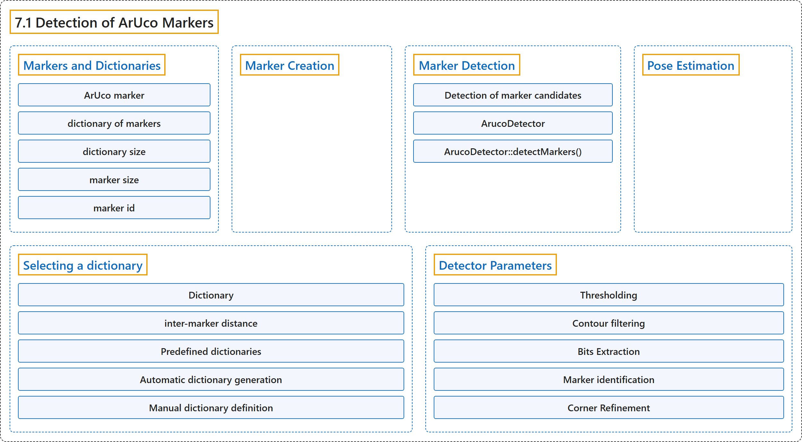

7.1 Detection of ArUco Markers
Classification

Glossary
| Term | Definition | 中文翻译 | Source |
|---|---|---|---|
| 7.1 Detection of ArUco Markers ArUco 标记检测 |
(context) "One of the most popular approaches is the use of binary square fiducial markers." | （语境）最常用的方法之一是使用二进制方形基准标记。 | OpenCV team, n.d., "Detection of ArUco Markers", para. 2 |
| Markers and Dictionaries 标记与字典 |
(No definition) | （无定义） | OpenCV team, n.d., "Markers and Dictionaries" |
| ArUco marker ArUco 标记 |
"An ArUco marker is a synthetic square marker composed by a wide black border and an inner binary matrix which determines its identifier (id)." | ArUco 标记是一种人工合成的方形标记，由宽的黑色边框和决定其标识符（id）的内部二进制矩阵组成。 | OpenCV team, n.d., "Markers and Dictionaries", para. 1 |
| dictionary of markers 标记字典 |
"A dictionary of markers is the set of markers that are considered in a specific application." | 标记字典是某个具体应用中所考虑的标记集合。 | OpenCV team, n.d., "Markers and Dictionaries", para. 3 |
| dictionary size 字典大小 |
"The dictionary size is the number of markers that compose the dictionary." | 字典大小是组成字典的标记数量。 | OpenCV team, n.d., "Markers and Dictionaries", item 1 |
| marker size 标记尺寸 |
"The marker size is the size of those markers (the number of bits/modules)." | 标记尺寸是这些标记的大小（位数/模块数）。 | OpenCV team, n.d., "Markers and Dictionaries", item 2 |
| marker id 标记 id |
"Instead, a marker id is simply the marker index within the dictionary it belongs to." | 实际上，标记 id 只是该标记在其所属字典中的索引。 | OpenCV team, n.d., "Markers and Dictionaries", para. 6 |
| Marker Creation 标记生成 |
(context) "Before their detection, markers need to be printed in order to be placed in the environment." | （语境）在检测之前，标记需要打印出来以便放置在环境中。 | OpenCV team, n.d., "Marker Creation", para. 1 |
| Marker Detection 标记检测 |
"Given an image containing ArUco markers, the detection process has to return a list of detected markers." | 给定一幅包含 ArUco 标记的图像，检测过程要返回检测到的标记列表。 | OpenCV team, n.d., "Marker Detection", para. 1 |
| Detection of marker candidates 候选标记检测 |
"Detection of marker candidates. In this step the image is analyzed in order to find square shapes that are candidates to be markers." | 候选标记检测。在这一步中，分析图像，寻找可能是标记的方形。 | OpenCV team, n.d., "Marker Detection", item 1 |
| ArucoDetector ArucoDetector 类 |
(context) "When you create an cv::aruco::ArucoDetector object, you need to pass the following parameters to the constructor:" | （语境）创建 cv::aruco::ArucoDetector 对象时，需要向构造函数传入以下参数： | OpenCV team, n.d., "Marker Detection", para. 1 |
| ArucoDetector::detectMarkers() detectMarkers 方法 |
(context) "In the aruco module, the detection is performed in the cv::aruco::ArucoDetector::detectMarkers() function. This function is the most important in the module, since all the rest of the functionality is based on the detected markers returned by cv::aruco::ArucoDetector::detectMarkers()." | （语境）在 aruco 模块中，检测由 cv::aruco::ArucoDetector::detectMarkers() 函数完成。这个函数是该模块中最重要的，因为其余所有功能都基于它返回的检测结果。 | OpenCV team, n.d., "Marker Detection", para. 1 |
| Pose Estimation 位姿估计 |
"The camera pose relative to the marker is a 3d transformation from the marker coordinate system to the camera coordinate system." | 相机相对于标记的位姿是从标记坐标系到相机坐标系的三维变换。 | OpenCV team, n.d., "Pose Estimation", para. 5 |
| Selecting a dictionary 选择字典 |
(No definition) | （无定义） | OpenCV team, n.d., "Selecting a dictionary" |
| Dictionary Dictionary 类 |
"The aruco module provides the Dictionary class to represent a dictionary of markers." | aruco 模块提供 Dictionary 类来表示一个标记字典。 | OpenCV team, n.d., "Selecting a dictionary", para. 1 |
| Dictionary::getByteListFromBits() getByteListFromBits 静态方法 |
"Fortunately, a marker can be easily transformed to this form using the static method Dictionary::getByteListFromBits()." | 幸好，用静态方法 Dictionary::getByteListFromBits() 可以很容易地把标记转换成这种形式。 | OpenCV team, n.d., "Manual dictionary definition", para. 4 |
| inter-marker distance 标记间距离 |
"The inter-marker distance is the minimum Hamming distance between dictionary markers that determines the dictionary's ability to detect and correct errors." | 标记间距离是字典中各标记之间的最小汉明距离，它决定字典检测和纠正错误的能力。 | OpenCV team, n.d., "Selecting a dictionary", para. 2 |
| Predefined dictionaries 预定义字典 |
"The aruco module includes a set of predefined dictionaries in a variety of marker sizes and number of markers." | aruco 模块包含一组标记尺寸和标记数量各不相同的预定义字典。 | OpenCV team, n.d., "Predefined dictionaries", para. 1 |
| DICT_6X6_250 DICT_6X6_250 字典 |
"cv::aruco::DICT_6X6_250 is an example of predefined dictionary of markers with 6x6 bits and a total of 250 markers." | cv::aruco::DICT_6X6_250 是一个预定义字典的例子，标记为 6×6 位，共 250 个标记。 | OpenCV team, n.d., "Predefined dictionaries", para. 2 |
| Automatic dictionary generation 自动生成字典 |
"A dictionary can be generated automatically to adjust the desired number of markers and bits to optimize the inter-marker distance:" | 字典可以自动生成，按所需的标记数量和位数进行调整，以优化标记间距离： | OpenCV team, n.d., "Automatic dictionary generation", para. 1 |
| Manual dictionary definition 手动定义字典 |
"Finally, the dictionary can be configured manually, so that any encoding can be used." | 最后，字典可以手动配置，从而可以使用任意编码。 | OpenCV team, n.d., "Manual dictionary definition", para. 1 |
| Detector Parameters 检测器参数 |
"One of the parameters of cv::aruco::ArucoDetector is a cv::aruco::DetectorParameters object. This object includes all the options that can be customized during the marker detection process." | cv::aruco::ArucoDetector 的参数之一是一个 cv::aruco::DetectorParameters 对象。这个对象包含标记检测过程中所有可以自定义的选项。 | OpenCV team, n.d., "Detector Parameters", para. 1 |
| Thresholding 阈值化 |
"One of the first steps in the marker detection process is adaptive thresholding of the input image." | 标记检测过程的最初步骤之一是对输入图像做自适应阈值化。 | OpenCV team, n.d., "Thresholding", para. 1 |
| Contour filtering 轮廓过滤 |
"They are filtered out in different steps so that contours that are very unlikely to be markers are discarded." | 它们分几步被过滤，从而丢弃那些不太可能是标记的轮廓。 | OpenCV team, n.d., "Contour filtering", para. 1 |
| Bits Extraction 位提取 |
"After candidate detection, the bits of each candidate are analyzed in order to determine if they are markers or not." | 候选检测之后，分析每个候选的位，以确定它们是否是标记。 | OpenCV team, n.d., "Bits Extraction", para. 1 |
| Marker identification 标记识别 |
"After the bits have been extracted, the next step is checking whether the extracted code belongs to the marker dictionary and, if necessary, error correction can be performed." | 位提取之后，下一步是检查提取的编码是否属于标记字典，必要时还可以进行纠错。 | OpenCV team, n.d., "Marker identification", para. 1 |
| Corner Refinement 角点细化 |
"After markers have been detected and identified, the last step is performing subpixel refinement of the corner positions" | 标记被检测和识别之后，最后一步是对角点位置做亚像素细化 | OpenCV team, n.d., "Corner Refinement", para. 1 |
References
OpenCV team. (n.d.). Detection of ArUco Markers. OpenCV-Python Tutorials (Version 4.13.0). Retrieved October 31, 2026, from https://docs.opencv.org/4.x/d5/dae/tutorial_aruco_detection.html